Galeri & Momen
Intip fasilitas dan momen hangat di restoran kami.

Area Makan Nyaman

Area Teras Terbuka

Momen Hangat Keluarga

Dapur Profesional
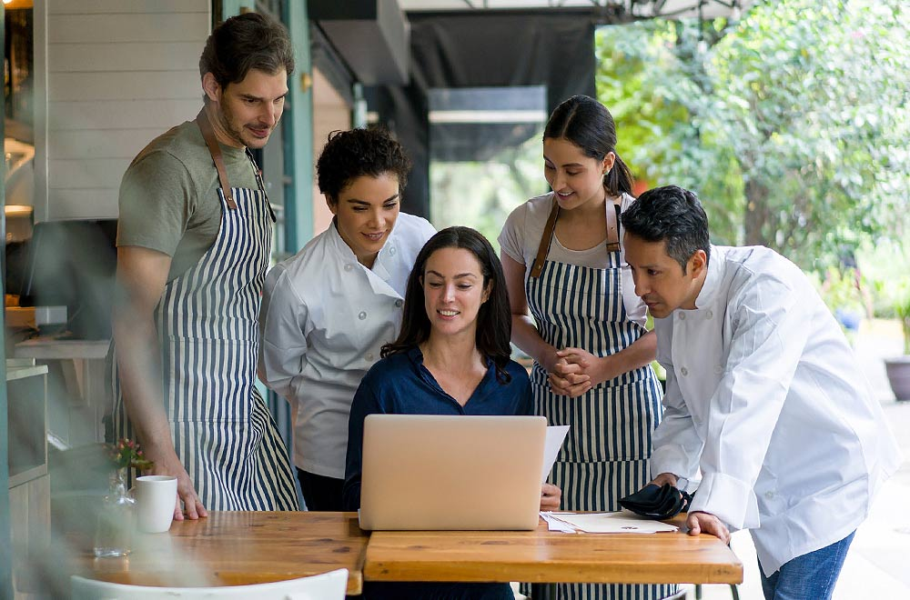
Chef Berpengalaman

Panggung Akustik

Area Nonton Bareng
Klik hidangan untuk mengetahui cerita di balik rasanya.

Ayam Bakar

Nasi Goreng Spesial
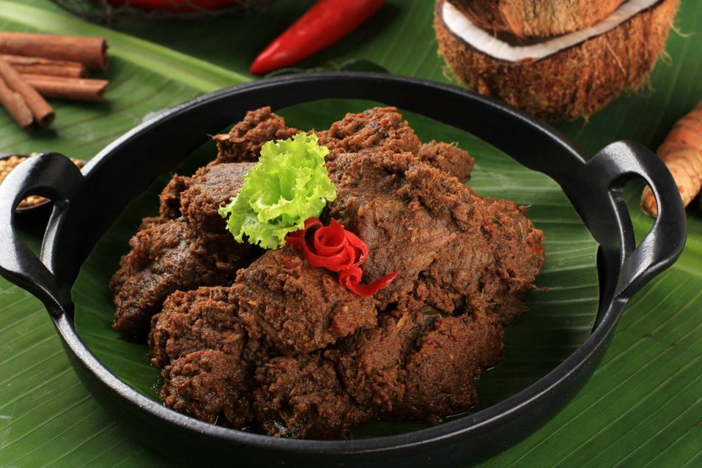
Rendang Sapi
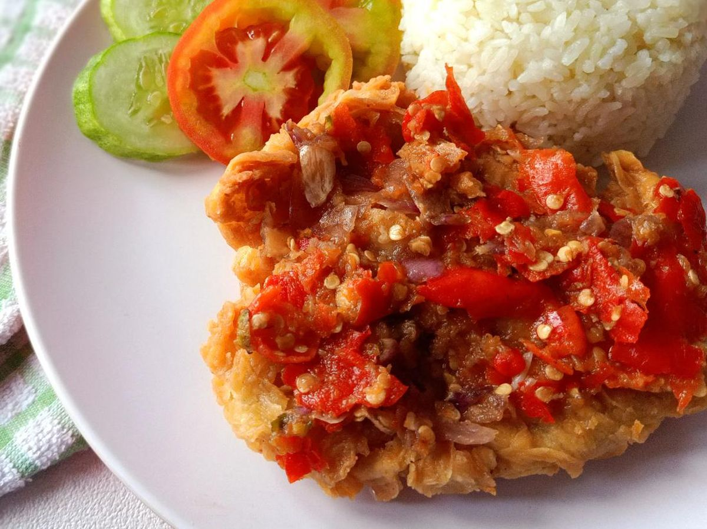
Ayam Geprek
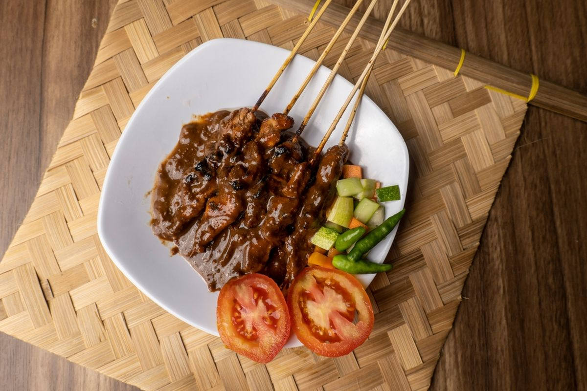
Sate Ayam
Mie Goreng

Choco Fondant
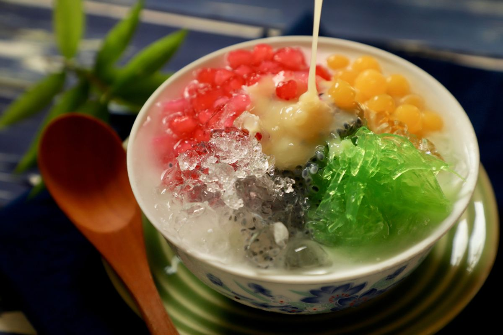
Es Campur
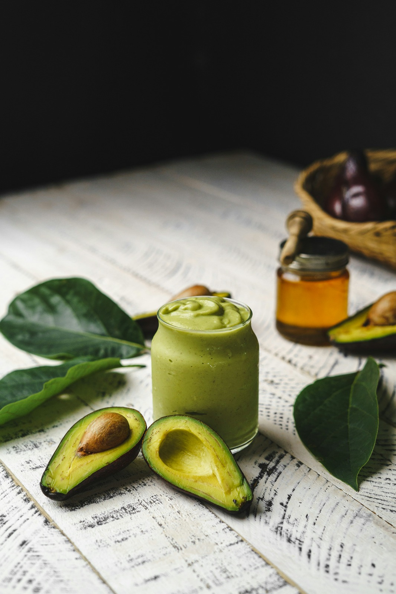
Jus Alpukat
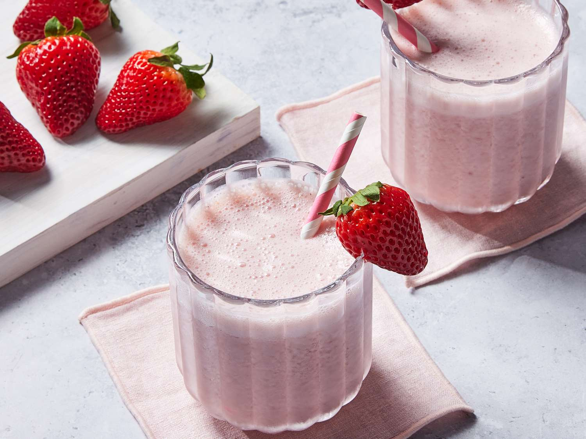
Jus Strawberry
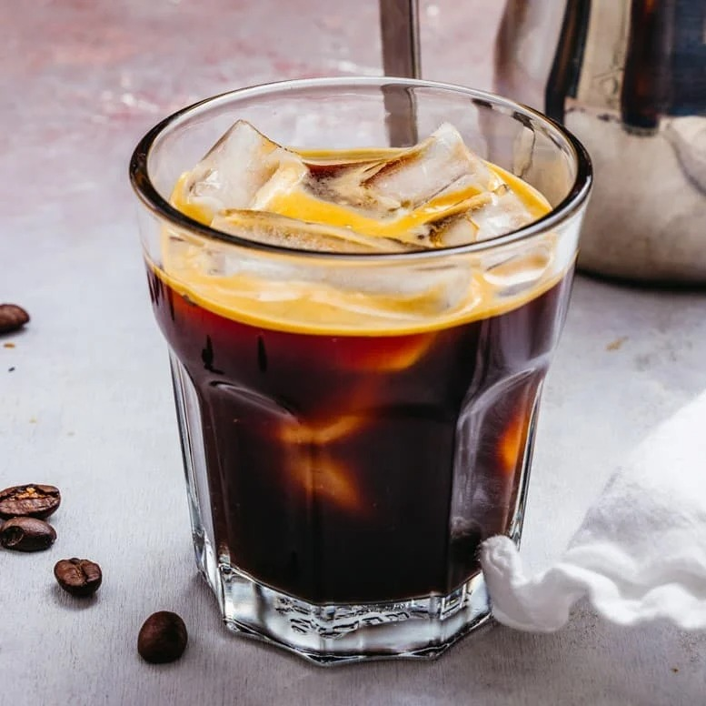
Americano
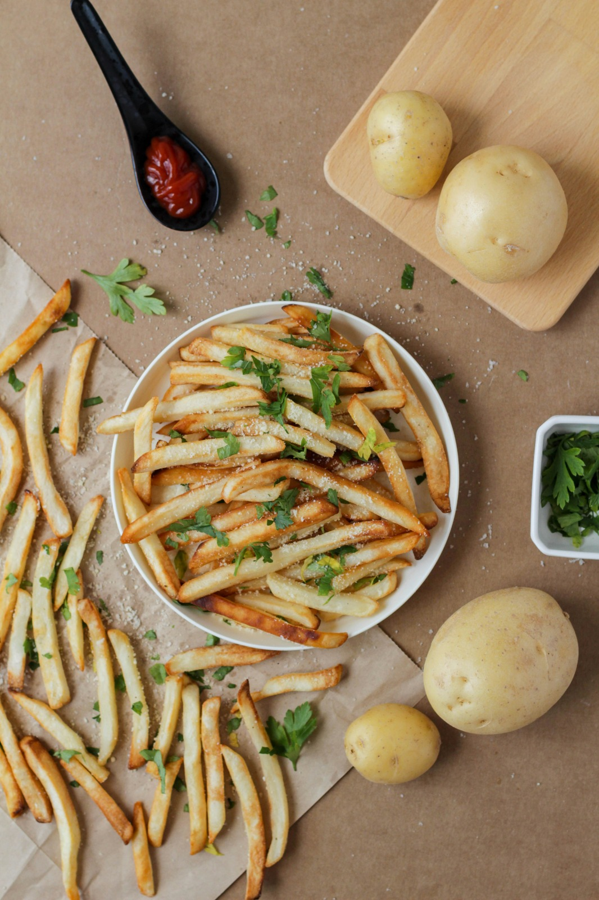
Kentang Goreng
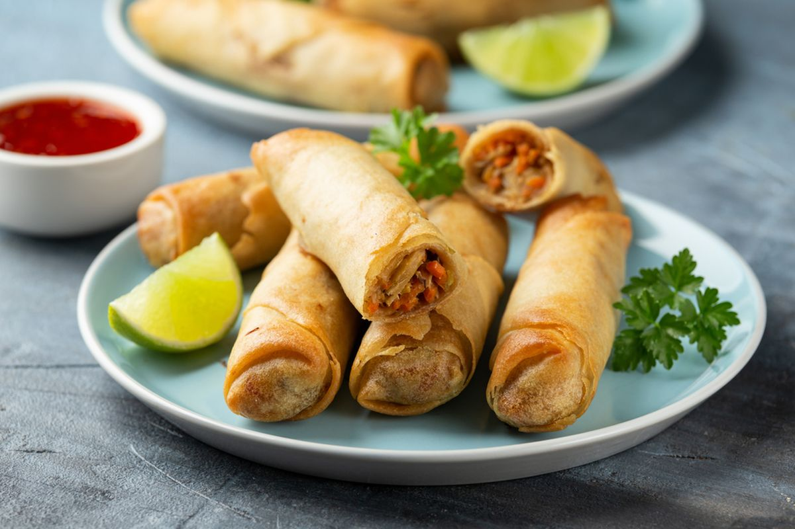
Lumpia Goreng

Tempe Mendoan

Roti Bakar
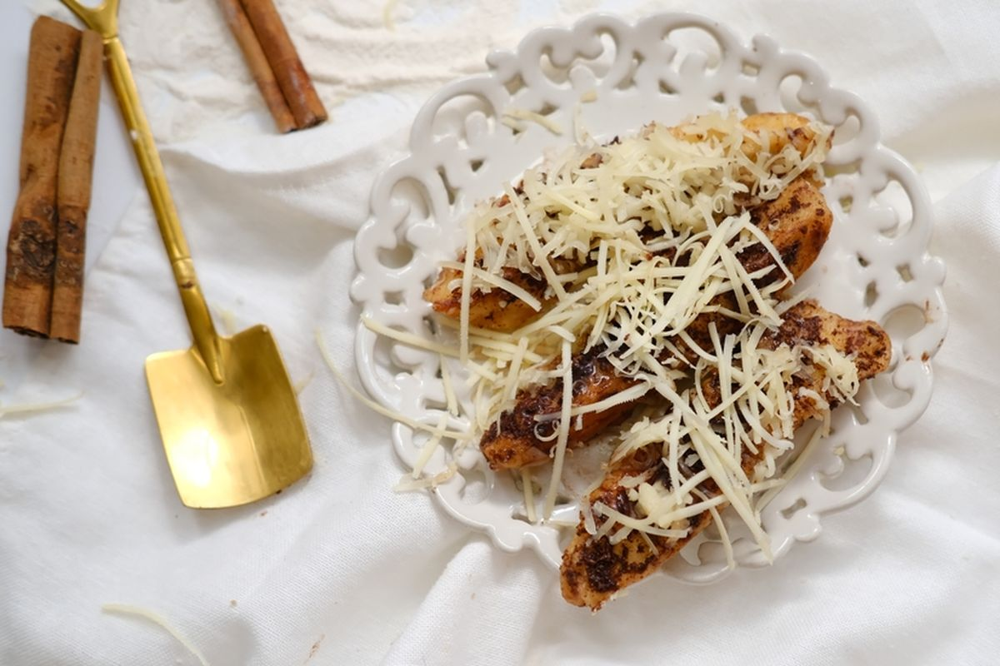
Pisang Keju
Nama Menu
Deskripsi cerita menu akan muncul di sini.